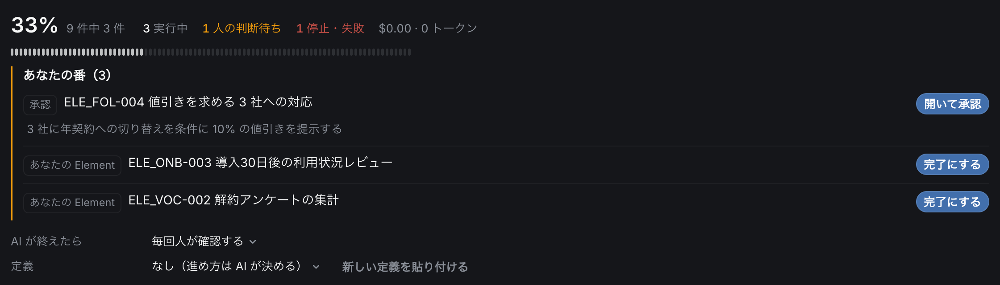

確認するためだけの定例会議
毎週の会議の大半が「あれどうなった？」「来週までに確認します」の繰り返し。
決めたことが、いまどこまで進んでいるか。
確認のための会議も、報告のための資料も、もう要りません。

課題
方針は会議で決まる。でもその後、誰が何をしていて、どこで止まっているのかは、聞いて回らないと分からない。
毎週の会議の大半が「あれどうなった？」「来週までに確認します」の繰り返し。
チャットとメールと Excel から状況を拾い集めて、上に報告するための資料をつくり直す。
最初は丁寧に書かれていた進捗表が、ひと月後には誰も見ていない。
担当が変わると、判断の理由も前提も消える。同じ議論を何度もやり直す。
AI を入れてみたが、どこまで勝手にやらせていいのか決められず、結局人が全部やっている。
ひとつひとつは小さい。
でも合わせると、管理職の時間の多くが「状況を知るため」に消えている。
Clayware でできること
方針を立てる場所、仕事を進める場所、記録を残す場所が、ひとつにつながっています。
AIP — AI Platform
AIP は、Clayware の仕事（Element）を AI に実行させる仕組みです。AI は任せた人の権限の範囲で作業し、メールの送信やファイルの書き込みのように外部に影響する操作は、実行する前に人の承認を待ちます。
仕事の担当に AI を選びます。AI は仕事の説明に加えて、その仕事が属する方針の目的・成功条件・関連する表を読んでから始めます。
連携したサービス（Google Drive、GitHub など）、作業用の仮想マシン、任せた人の PC のブラウザを使って、調べる・作る・操作するまで行います。
外部に送る・書き込む操作の前で止まり、「あなたの番」に承認依頼を出します。承認されるまで実行しません。
終わったら、別の AI が成功条件と照らして完了かどうかを確かめます。報告・作ったファイル・操作の記録が仕事に残ります。

「あなたの番」。AI からの承認依頼が、人がやる仕事と同じ一覧に並びます。
AIP について詳しく変わること
ユースケース